npm i webpack-dev-server -Dpackage.json文件
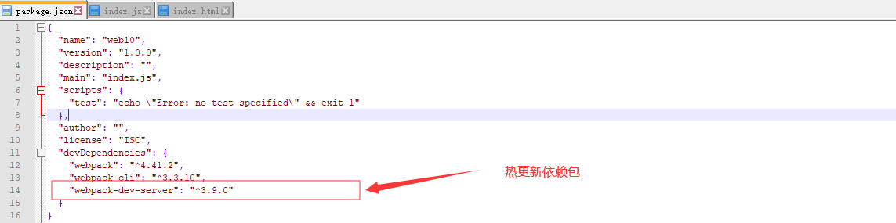
在web10项目里建一个build文件夹里面在建一个webpack.conf.js文件
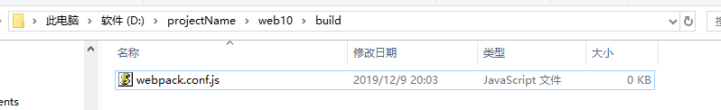
4、webpack.conf.js配置
1 //声明变量
2 var webpack = require('webpack');
3 var PATH = require('path');//这是nodejs的核心模块之一
4 var SRC_PATH = PATH.resolve(__dirname,'../src');
5 var DIST_PATH = PATH.resolve(__dirname,'../dist');
6
7
8 module.exports = {
9 entry:SRC_PATH+'\\index.js',
10 output:{
11 path:DIST_PATH,
12 filename:'bundle.js'
13 },
14 //loader
15 module:{
16 },
17 //插件
18 plugins:[
19 ],
20 devServer:{//开发服务器
21 hot:true,//热更新
22 inline: true,//
23 open:true,//是否自动打开默认浏览器
24 contentBase:DIST_PATH,//发布目录
25 port:'0996',//控制端口
26 host:'0.0.0.0',//host地址
27 historyApiFallback:true,
28 useLocalIp:true,//是否用自己的IP
29 proxy:{
30 '/action':'http://127.0.0.1:8080/'
31 }
32 }
33 }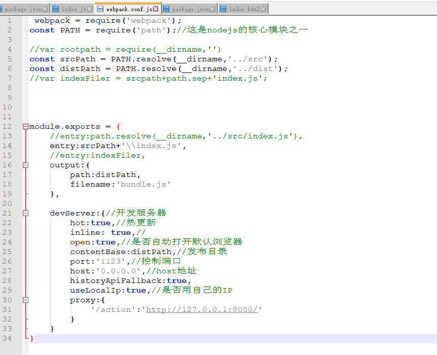
编译：命令 webpack --config build/webpack.conf.js --mode development
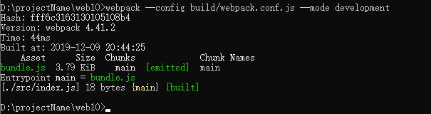
编译后dist里面会多出一个bundle.js 改写一下index.html引入bundle.js
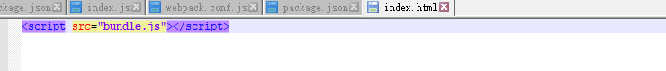
同时npm 允许在package.json文件里面，使用scripts字段自定义脚本命令。
"dev": "webpack-dev-server --mode development --inline --progress --config build/webpack.conf.js"
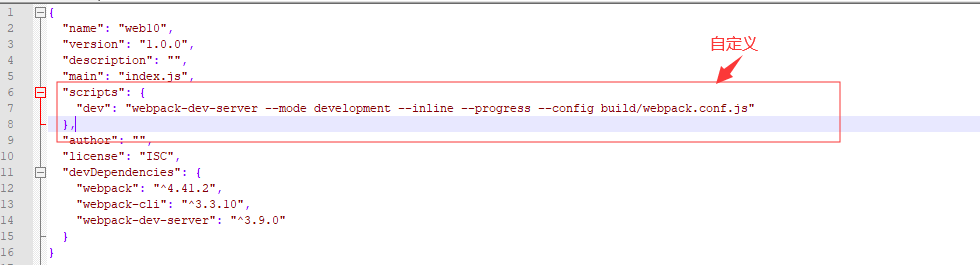
运行:自动打开浏览器
1 npm run dev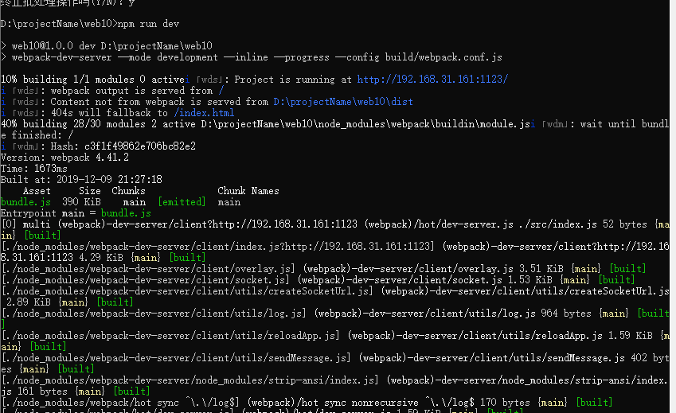
访问你写的index.html
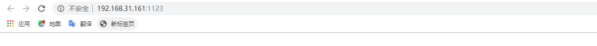
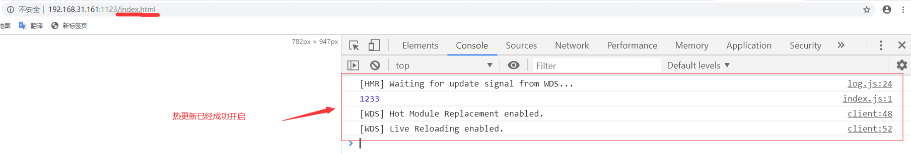
热更新表现在哪里？
修改src里的index.js文件 点击保存 同时热更新起效 修改bundle.js里的值，从而起到热更新的效果。
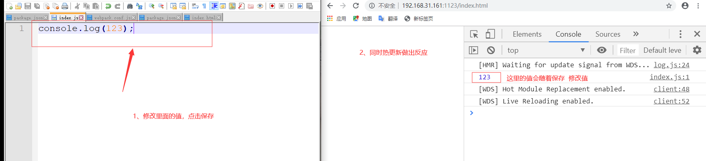
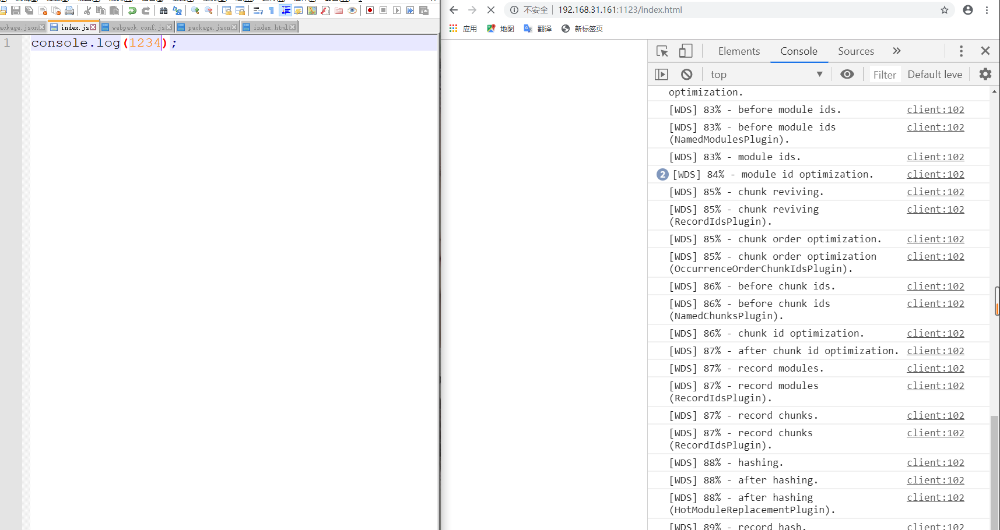
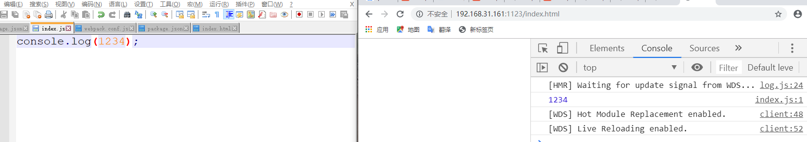
缺点
会发现这样虽然解决了网页刷新麻烦的问题 ，但是也有不方便的之处 就是你的dist中的index.html文件要自己手动建 而且打包后的main.js也要自己手动写入，比较麻烦下一篇随笔要讲的一个插件就是可以动态生成html文件，不用手写代码。打包就直接引用。